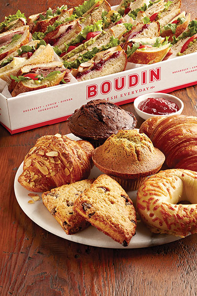

<!-- start meta  include -->
    <?php include '../../inc/le_meta.php'; ?>
		
<div class="container content_wrap">
	<div class="row">         

<!-- start sidebar  include -->
	<?php include '../../inc/side_menu.php'; ?>
            
           <div class="span10 content_inside">
           
           
           
            	<div class="wrap_border">
                	<h3>All day agenda<p class="h3_sum">Items are priced per person unless otherwise noted</p></h3>
  					<div class="row menu_row">
    					<div class="thumbnail content_thumb span7">
      						<h4>the basic</h4>
      						<p class="food_des">Muffin & Bagel Basket, Fresh brewed Peet’s coffee
or hot tea.</p>
                            <h5>Breakfast</h5>
                            <p class="food_des">Breakfast and lunch for the day; everything you need for any group.</p>
                             <h5>Lunch</h5>
                            <p class="food_des">Cookie Basket, Choice of drink (soda or bottled water)</p>
                            <p>18.99, Add soup 3.99</p>
                        </div> 
						
                        	<div class="thumb_img_wrap span2">
                        	
                        </div>
                        	
					</div>
                    
                    <div class="row menu_row">
    					<div class="thumbnail content_thumb span7">
      						<h4>the max</h4>
      						<p class="food_des">Upgrade to serve our maximum all day agenda: Baker’s breakfast basket, Boudins’ finest lunch, and beverages.</p>
                            <h5>Breakfast</h5>
                            <p class="food_des">Baker’s Breakfast Basket, (muffins, bagels, croissants, and scones) Fresh brewed Peet’s coffee or hot tea.</p>
                            <h5>Lunch</h5>
                            <p class="food_des">Boudins’ Finest Sandwich basket with two side choices,  (salad choices: caesar, mixed greens, spring salad <i class="icon-ok" data-toggle="tooltip" title="This item meets Eat Well Berkeley guidelines for healthy menu options."></i> or bagged chips) San Francisco Treats,
(fresh baked cookies, brownies, and bars) and choice of drink.
(soda or bottled water)</p>
                            <p>23.99, add soup 3.99</p>
                            
                        </div> 
						
					</div>
                    
                    <div class="row menu_row row_last">
                    	
    					<div class="thumbnail content_thumb span7">
      						<h4>sandwich choices</h4>
      						<p class="food_des">Turkey Havarti, Turkey Cranberry, Tuna Salad, Chicken Salad, Tender Roast Beef, Fra’ Mani Ham & Swiss, Peanut Butter & Jelly,  California Veggie <i class="icon-ok" data-toggle="tooltip" title="This item meets Eat Well Berkeley guidelines for healthy menu options."></i>,  Turkey Avocado <i class="icon-ok" data-toggle="tooltip" title="This item meets Eat Well Berkeley guidelines for healthy menu options."></i>, Chicken Pesto, Italian Classic, Pesto Roast Beef, Fra’ Mani Ham & Brie.</p>
                            <p class="cite"> all sandwiches come dressed</p>
                        </div> 
						
					</div>
                    
                   
                    
                     
                    
                    
                    
          </div>     

  
                <br />
  <p><i class="icon-ok" data-toggle="tooltip" title="This item meets Eat Well Berkeley guidelines for healthy menu options."></i> Items marked with a checkmark meet Eat Well Berkeley guidelines for healthy menu options </p> 
            </div>
            
 </div>  
 </div> 


<!-- start sidebar  include -->
	<?php include '../../inc/footer.php'; ?>